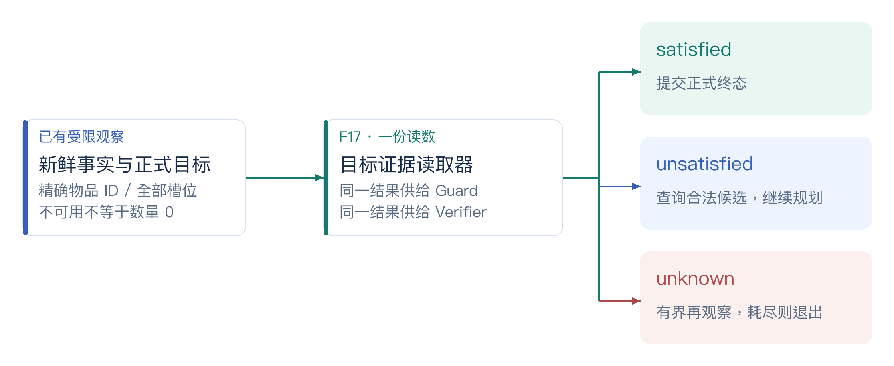
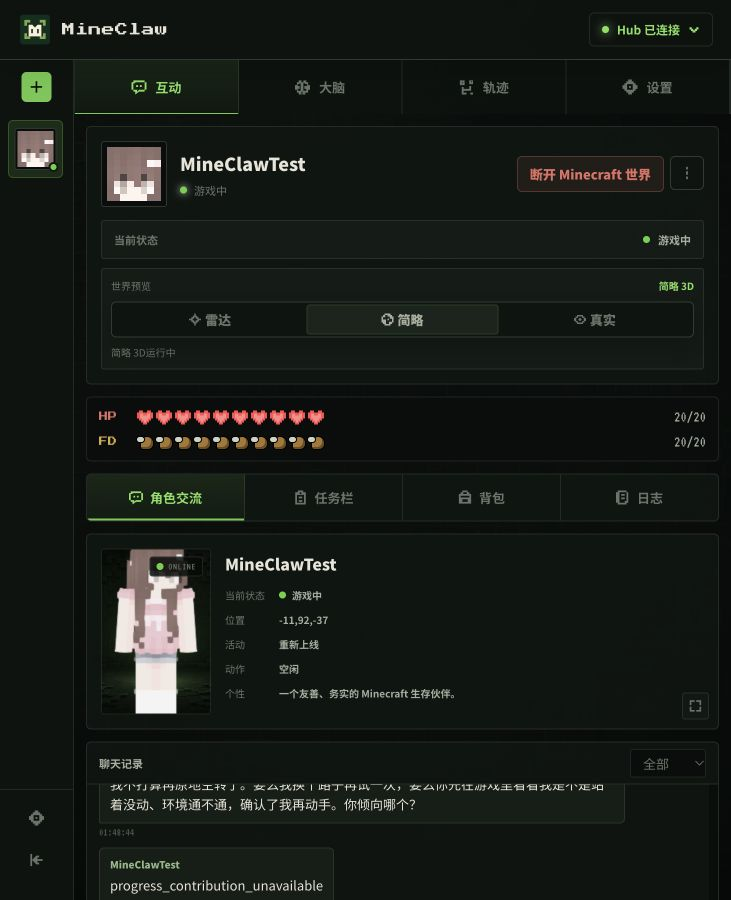

MineClaw
和 Minecraft 伙伴聊天，交给它一个游戏目标，再从调用轨迹查看它怎样行动、怎样核对结果。
 放大查看 ↗
放大查看 ↗从伙伴互动切到调用轨迹
在客户端选中 MineClawTest，依次打开「大脑 → 能力」和「轨迹」。这段约 10 秒的操作实录展示的是已保存的会话，录制时伙伴尚未进服。
玩家的目标如何走到身体执行？
以「去取木头」为例。主脑把目标交给 GoalAgent，目标执行器结合位置、背包和附近方块准备行动。第一张图从目标编译画到动作回执。
第二张图说明怎样判定完成。取物后检查背包变化，证据满足才提交结果，信息不足时重新观察。
 放大查看 ↗
放大查看 ↗
放大查看 ↗玩家客户端里能看到什么？
互动页把伙伴选择、游戏预览和对话放在一起。切到轨迹页，可以展开每个回合，查看这一轮调用了哪些模型和工具。
 放大查看 ↗
放大查看 ↗ 放大查看 ↗
放大查看 ↗哪些调用复用了模型输入？
2026 年 10 月 19 日至 11 月 6 日，工作区记录了 190 次 DeepSeek 调用。647,940 个可缓存输入 token 中，有 476,156 个命中缓存，合计 73.5%。
主脑的 19 对相邻请求使用了相同工具，其中 8 对最早在「最近对话记录」处分叉。较早的消息一旦被改写，后续相同的内容也难以复用。
待验证的优化是保留原始对话和工具结果，将本轮游戏状态与新问题追加在末尾。重放同一段追问，比较每个成功任务的未命中 token，同时核对回答里的最新进度。
| 调用方 | 调用次数 | 输入命中率 | 未命中 token |
|---|---|---|---|
| 主脑 | 34 | 42.7% | 72,271 |
| 任务执行 | 42 | 80.2% | 66,223 |
| 记忆整理 | 114 | 82.2% | 33,290 |
调用事件和进服记录
下面两张工作区留档记录了不同的时刻。LanYi 的截图选中了一个调用事件，MineClawTest 的截图则显示了伙伴进服后的坐标和生命值。运行游戏行动需要配置 Minecraft Java 版服务器与模型接口。
 放大查看 ↗
放大查看 ↗
放大查看 ↗